I present here a general solution of the inhomogeneous Stokes problem in the sphere with unit diameter.
The general solution
for the case  , but with inhomogeneous boundary conditions
has been discussed by Palaniappan et al. (1992) and
Padmavathi et al. (1998).
, but with inhomogeneous boundary conditions
has been discussed by Palaniappan et al. (1992) and
Padmavathi et al. (1998).
An identity that will be used frequently is:
Proof: The lemma is elementary; its proof is contained in most texts on vector analysis, potential theory or continuum mechanics--see, for example, Lamb (1932, pp. 37-41).
Basically, the irrotationality implies that the field
may be expressed as the gradient of a scalar, the solenoidality implies that
the scalar is harmonic and the boundary conditions imply that the scalar is
uniform.
Proof:
The theorem is proved if it can be shown that
the velocity field,  , is solenoidal and
vanishes on the boundary, and that the field equation is satisfied.
, is solenoidal and
vanishes on the boundary, and that the field equation is satisfied.
The divergence of  vanishes automatically since
vanishes automatically since  is expressed as the sum of its poloidal and toroidal parts.
is expressed as the sum of its poloidal and toroidal parts.
Both the poloidal and toroidal parts of  vanish on the
surface, by the boundary conditions on
and
(§B.3). Therefore the boundary condition on
vanish on the
surface, by the boundary conditions on
and
(§B.3). Therefore the boundary condition on  is satisfied.
is satisfied.
To show that the equation of motion is satisfied, let
| 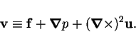 | (B.25) |
The required result follows from Lemma 3
if  is solenoidal and irrotational and
has zero normal component on the surface 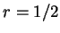.
is solenoidal and irrotational and
has zero normal component on the surface 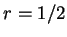.
The divergence of  is:
is:
| 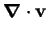 | 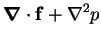 | ||
| 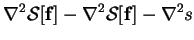 | |||
| (B.26) |
The curl of  is:
is:
| 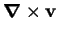 | 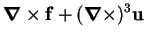 | ||
| 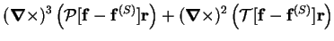 | |||
| 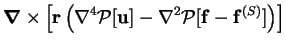 | |||
| 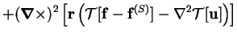 | |||
| (B.27) |
The normal component of  at
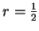 is:
at
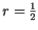 is:
| 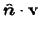 | 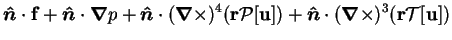 | ||
| 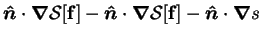 | |||
| 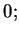 | (B.28) |
Examples of the use of the method will be found in §8.2.
No insurmountable difficulty would be added by the imposition of inhomogeneous boundary conditions on the velocity. The velocity field could be decomposed, due to the linearity of the Stokes problem, into parts induced by the body force and the boundary conditions. These would then be obtained by the methods of Theorem 4 and Palaniappan et al. (1992), respectively.